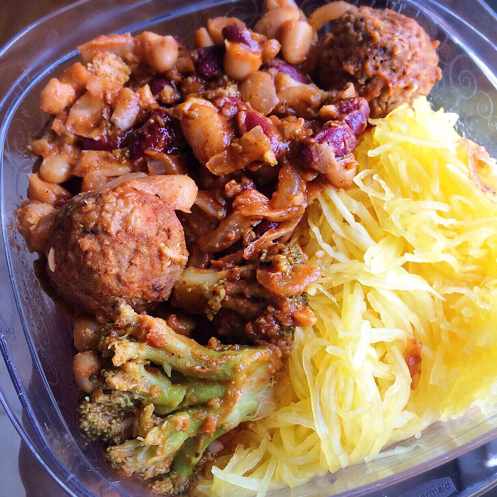

Vegan Meatless Chili

Back to work today! I made this vegan meatless chili for lunches at work, but this would be a killer dinner, too!
If you saw my latest life update video, you heard that I went back to working in the lab! I'm back at the CDC :) working with a similar group I was in before, but slightly different research! I get to see a lot of the same people, so that makes me happy. Some new people, some old. They were so kind to offer me a place back in the lab.
I am thankful that my physical & mental health is back in a place of being able to work in the lab. When I left the lab last year, I felt like I couldn't really function or be reliable as I was dealing with the new diagnosis of fibromyalgia. So I arranged my life to be self sufficient and work at home (blog work + the bakehouse). But circumstances are so different now. I've figured out my health and how to control it rather than let it control my life. I also didn't realize how much I'd miss science! I really do need the mental challenge to balance out my creative outlets. With that being said, I am closing the bakehouse (at least for now, may pursue it again later who knows). My main priorities moving forward are work, the blog, and youtube, so don't worry :) I will always find time for the blog!
SO now that I'm back in a "regular-people" work week, I've got to re-learn meal prep. At first I was like whuuu..? Where do I begin. I've never been vegan while meal prepping, so all I knew in the past was packing chicken, tuna, chili pumpkin turkey meatleaf, etc. So what do I do now?! Wellllll I made this! Can't go wrong with a warm, hearty chili
.I'm not even a huge fan of beans, but this is just so filling and comforting. I really wanted to focus on getting plant-based protein from this meal, as well as calcium and vitamin D since I have low bone density. I am pretty happy with the results of what I've made! I paired it with spaghetti squash in the tupperware. I've also got fruit, carrots, and hummus to snack on at work. In all, meal prep took less than an hour and a half. So yay. Try this out one week and let me know what you think! I posted a how-to video on Youtube.
Vegan Meatless Chili
Serves: 5
-
1 medium onion
-
4 garlic cloves
-
1 bag of frozen broccoli (5 cups)
-
1 bag Gardein brand meatless frozen meatballs (or meatless crumbles)
-
1 can low sodium cannellini beans
-
1 can low sodium red kidney beans
-
1, 8 oz can roasted garlic tomato sauce (~1 cup)
-
2 TBSP tomato paste
-
1/2 cup water
-
2 tsp chili powder
-
1 tsp cumin powder
-
salt & pepper
First, dice the onion and garlic cloves. Spray the base of a medium pot with nonstick spray, then add the onion, garlic cloves, and frozen broccoli. Let this cook on a medium heat, stirring often, until the onions are soft and translucent. Then add the remaining ingredients. Stir to evenly incorporate the ingredients, cover, and let simmer on a low heat for 12-18 minutes. Check occasionally and stir to ensure nothing sticks to the pan. Once the chili has thickened and the liquid is cooked off, remove from heat, let cool, and enjoy!!
Nutrition info for 1 serving: 335 calories; 6 g fat, 49 g carbs (16 g fiber), and 26 g protein